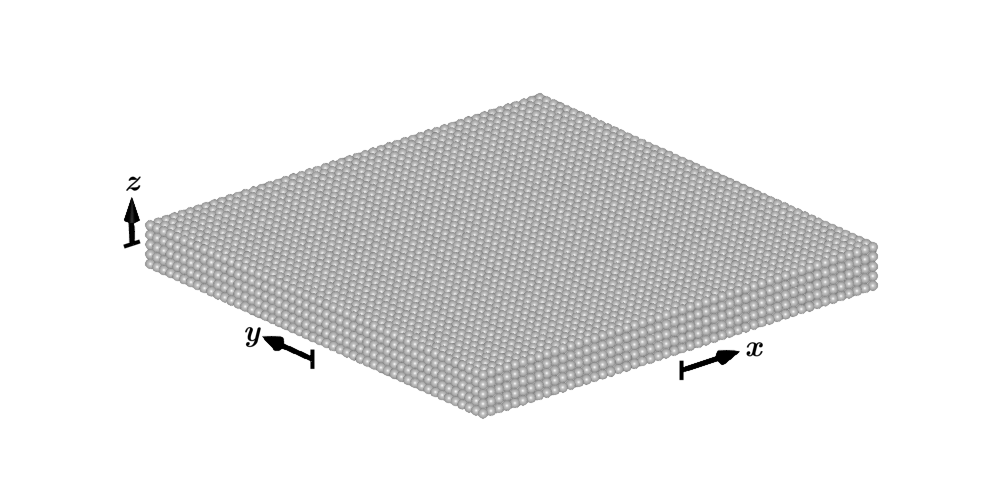
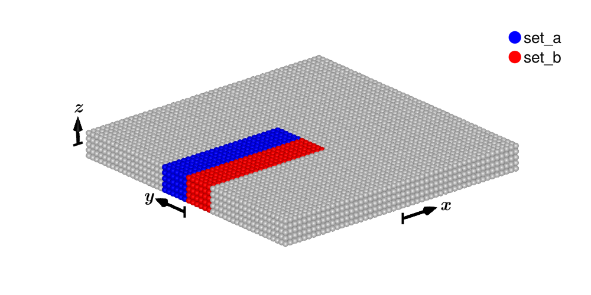

Predefined cracks
Short guide on how to define initial cracks.
Definition with two point sets
All interactions of points in set $a$ with points in set $b$ will be set as failed.
Example
using Peridynamics #hide
l = 1.0
a = 0.1l # crack length
Δx = l / 50
pc = PointCloud(l, l, 0.1l, Δx)
We define a crack length a and specify the point sets of points that should not interact with each other.
Conditions for the coordinates of the point sets
First set:
\[x_p \leq -\frac{l}{2}+a \; ,\]
\[0 \leq y_p \leq 6\Delta x \; .\]
set_a = findall(p -> p[1] ≤ -l/2+a && 0 ≤ p[2] ≤ 6Δx, eachcol(pc.position))Second set:
\[x_p \leq -\frac{l}{2}+a \; ,\]
\[-6\Delta x \leq y_p < 0 \; ,\]
set_b = findall(p -> p[1] ≤ -l/2+a && -6Δx ≤ p[2] < 0, eachcol(pc.position))
The initial crack is specified as a PreCrack instance:
precrack = PreCrack(set_a, set_b)